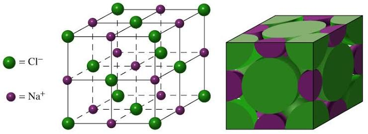
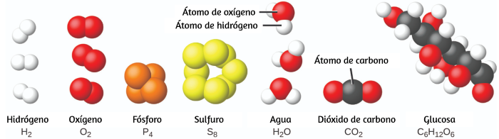

Universidad Peruana Cayetano Heredia
Unidad de Formación Básica Integral - UFBI
Elementos de Química · Clase 3: Compuestos Iónicos y Moleculares · Mol y Número de Avogadro
Unidad de Formación Básica Integral - UFBI
Elementos de Química · Clase 3: Compuestos Iónicos y Moleculares · Mol y Número de Avogadro
Se forman por la atracción electrostática entre iones de carga opuesta. Generalmente un metal (catión) y un no metal (anión).

Se forman por la unión de no metales mediante enlaces covalentes (compartición de electrones).

El mol es la cantidad de sustancia que contiene tantas entidades elementales (átomos, moléculas, iones, unidades fórmula) como átomos hay en exactamente 12 g de carbono-12.
| Sustancia | Masa molar (g/mol) | Partículas por mol |
|---|---|---|
| NaCl (sal) | 58,44 | 6,022×10²³ u.f. |
| H₂O (agua) | 18,02 | 6,022×10²³ moléculas |
| Glucosa (C₆H₁₂O₆) | 180,16 | 6,022×10²³ moléculas |
| CaCO₃ (carbonato de calcio) | 100,09 | 6,022×10²³ u.f. |
Haz clic en cada nodo para desplegar u ocultar sus ramas.
Haz clic en la tarjeta para voltearla y ver la respuesta. Luego califícate con honestidad.
Ingresa la fórmula de un compuesto (ej. NaCl, H₂O, C₆H₁₂O₆). Usa números enteros y no espacios.
Usa el número de Avogadro (6,022×10²³ partículas/mol).
Los compuestos iónicos y moleculares, así como el concepto de mol, tienen aplicaciones cotidianas en el ámbito sanitario.

| Fármaco | Fórmula | Masa molar (g/mol) | Uso terapéutico |
|---|---|---|---|
| Aspirina | C₉H₈O₄ | 180,16 | Analgésico, antiinflamatorio, antiagregante |
| Paracetamol | C₈H₉NO₂ | 151,16 | Analgésico, antipirético |
| Glucosa | C₆H₁₂O₆ | 180,16 | Nutrición parenteral |
| Ibuprofeno | C₁₃H₁₈O₂ | 206,28 | Antiinflamatorio no esteroideo |
"Metal + No metal = Iónico" — los compuestos iónicos se forman entre un metal y un no metal.
La masa molar de un elemento (g/mol) es numéricamente igual a su masa atómica (u.m.a.).
Haz clic en cada término para ver su definición:
Error: "El CO₂ es un compuesto iónico."
Error: "Una molécula de NaCl."
Error: "La masa atómica del Na es 23 g."
Error: Calcular moléculas sin usar 6,022×10²³.
Error: Calcular masa molar de CaCO₃ como 40+12+16 = 68 en lugar de 40+12+3(16)=100.
Se mostrarán 5 preguntas al azar de un total de 15. Al finalizar, podrás cargar una nueva ronda.